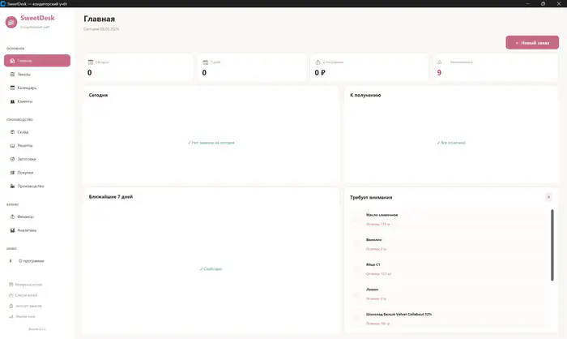
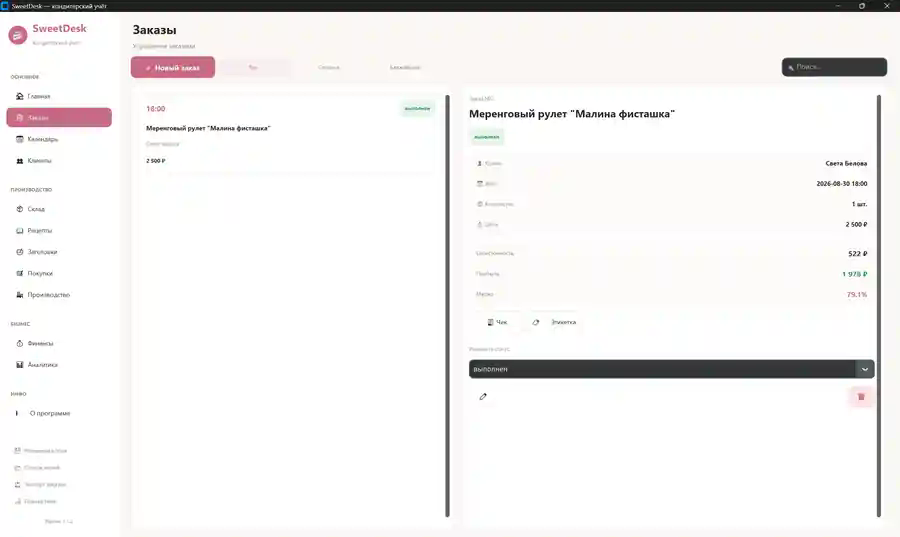
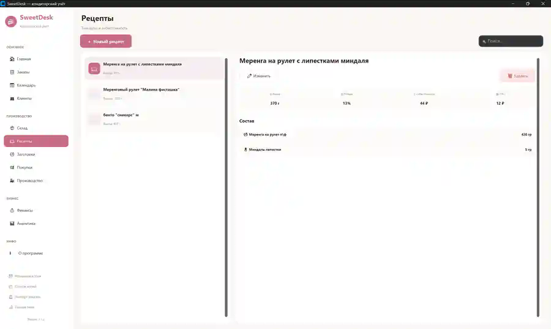

Заказы
Оформляйте и контролируйте заказы клиентов в одном месте.
SweetDesk объединяет заказы, клиентов, рецепты, себестоимость, склад, закупки, производство, финансы и аналитику в одном приложении.
Получить SweetDesk →
Не набор разрозненных таблиц, а единая рабочая программа для ежедневного учёта.
Оформляйте и контролируйте заказы клиентов в одном месте.
Храните клиентскую базу и историю работы с заказами.
Следите за датами и текущей загрузкой.
Создавайте рецептуры и рассчитывайте себестоимость.
Контролируйте остатки ингредиентов и материалов.
Учитывайте закупки и поступление необходимых продуктов.
Планируйте и учитывайте производственные операции.
Следите за финансовыми показателями и результатами бизнеса.

SweetDesk помогает держать в порядке текущие заказы и клиентскую информацию, не переключаясь между несколькими файлами.
Создавайте рецептуры, учитывайте ингредиенты и используйте данные о себестоимости при работе с продукцией.

Учитывайте складские остатки, закупки, заготовки и производство в рамках одной системы.
Здесь используются именно реальные скриншоты приложения.
Одна покупка — программа SweetDesk для ежедневной работы на Windows.
SweetDesk — программа для Windows, созданная для учёта кондитерского бизнеса: заказов, клиентов, рецептов, склада, производства, закупок и финансов.
Для кондитеров, cake-студий, небольших пекарен и других небольших кондитерских бизнесов.
Windows 10 и Windows 11.
Нет, для данного предложения используется разовая покупка лицензии.
Для основной ежедневной работы приложение запускается локально на компьютере.
SweetDesk помогает собрать учёт кондитерского бизнеса в одном месте.